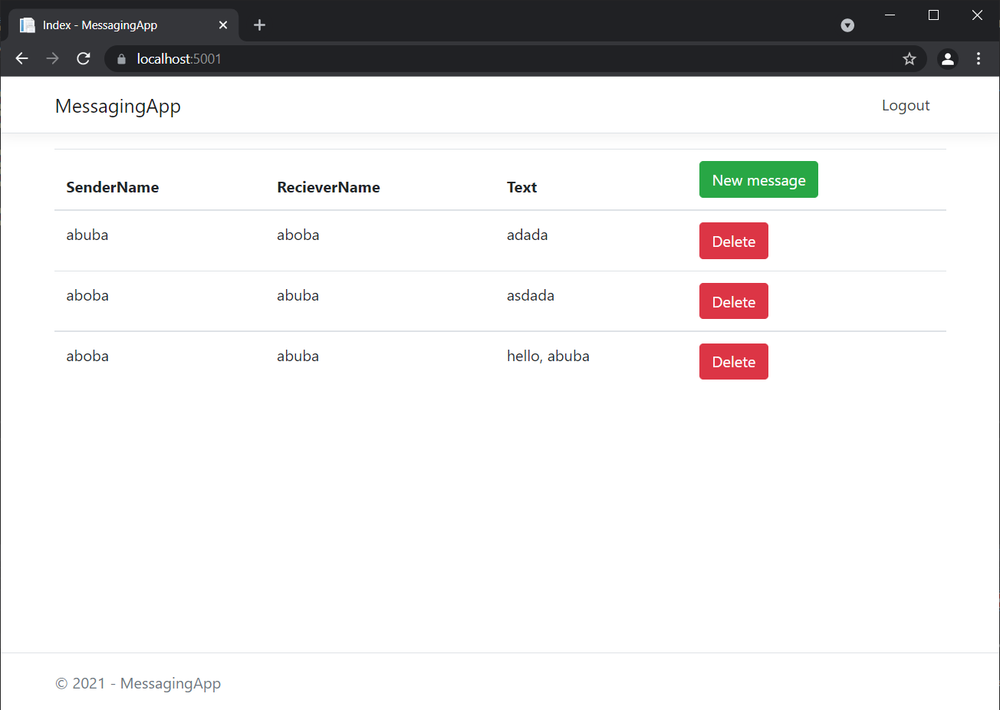

Бутирський Олег
Сайт реалізує можливість сворювати замітки до власного щоденника. До заміток можна додавати відповідні теми, а також є можливість переглядати деталі про замітку та видаляти її. Головна сторінка виглядає наступним чином: Введення замітки відбувається через форму, в яків можна вказати відповідні дані: Можливість детального перегляду виглядає так: При спробі видалення користувачеві показується наступне: Ajax скрипт, що використовується виглядає так:Адамов Денис
Сайт надає змогу листування двох користувачів з можливістю авторизації Стартова сторінка - всі повідомлення всіх користувачів Можемо зареєструватися Або зайти в акаунт Якщо виконано вхід, відображаються лише надіслані та отримані цим користувачем повідомлення Можемо написати нове повідомлення Воно відобразиться у списку  Можемо видалити повідомлення І воно зникне Частина AJAX-запитів, що використовувалисяБойко Олег
Сайт реалізує можливість інтерактивної перевірки корректності заповнення форми. Робота форм представлена наступними етапами заповнення, підказок та перевірок: